trip
어렸을때부터 가족여행이나 수학여행, 친구들과 해수욕장이나 계곡등에 놀러가본 경험은 많이 해봤었다. 하지만 다른 누구에 의해 정해져서 가는 것이 아닌 내가 원하는 지역을 가서 돌아보며 그 지역만의 멋과 특산품, 분위기 등을 알게되는식의 여행을 해본 건 22살때 친구와 함께 춘천을 가본것이 처음이었는데 이때 경험해본 여행이 그 이후로도 내 기준에서의 진짜 '여행'이라고 생각하게 되었다.
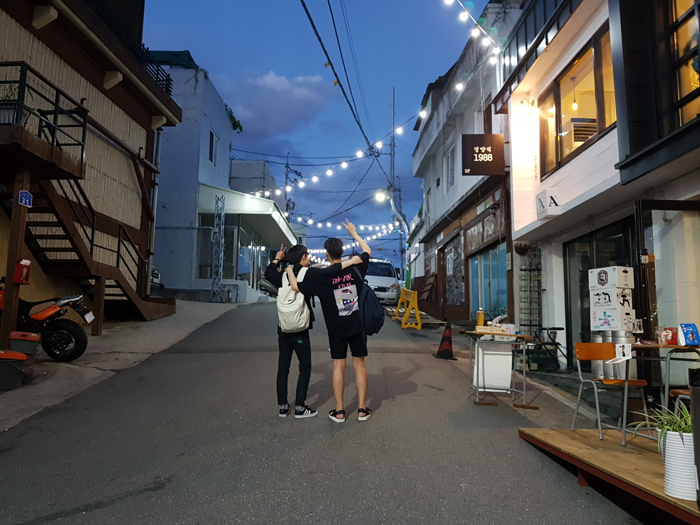
<춘천에서의 추억>
그 이후로 대만이나 일본을 가보게 되었는데 국내여행에서는 느낄 수 없는 낯선곳에서의 설렘과 해방감, 그 나라 특유의 음식과 문화도 경험하고 다양한 사람들과의 만남등을 통해 시야가 넓어지는 걸 느끼게 되어 해외여행을 보다 더 선호하게 되었다.
 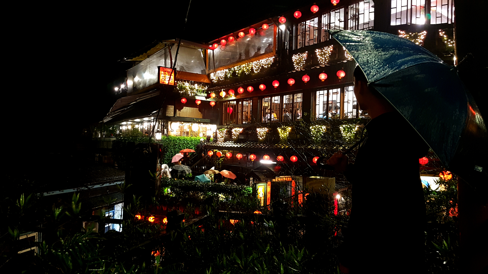
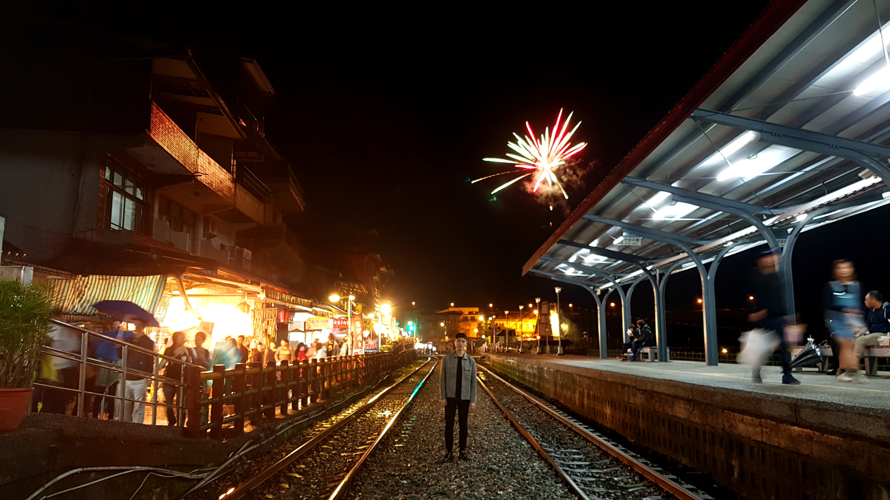
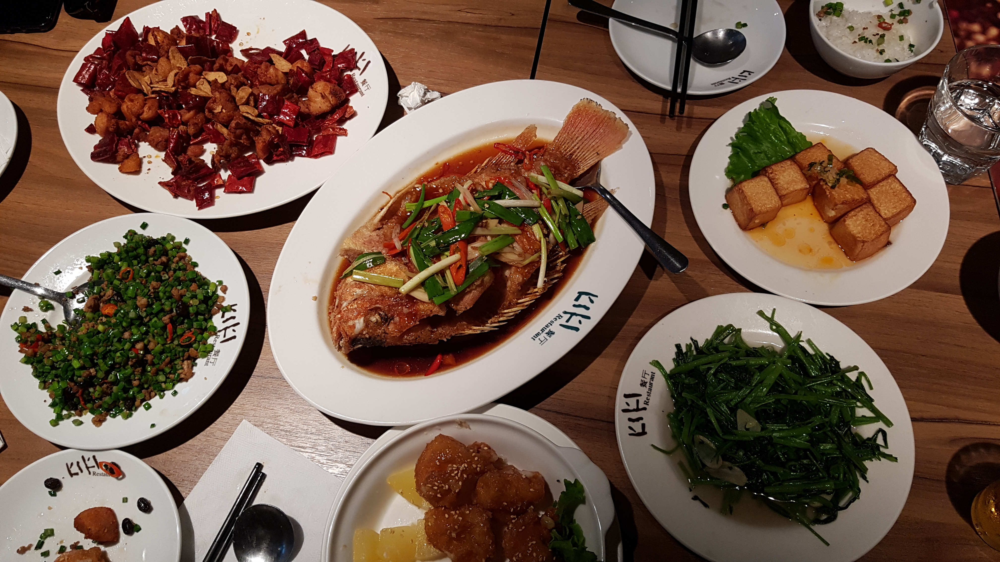
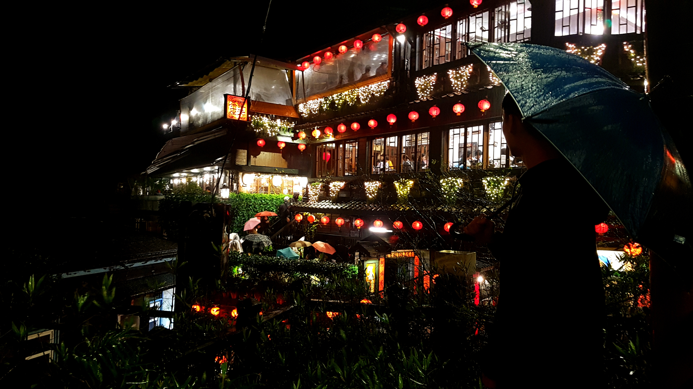
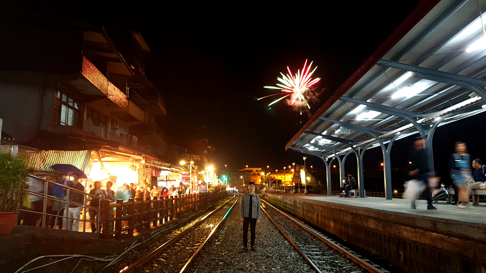
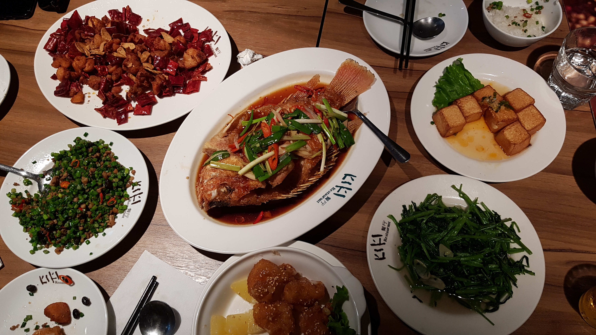

<대만에서의 추억>
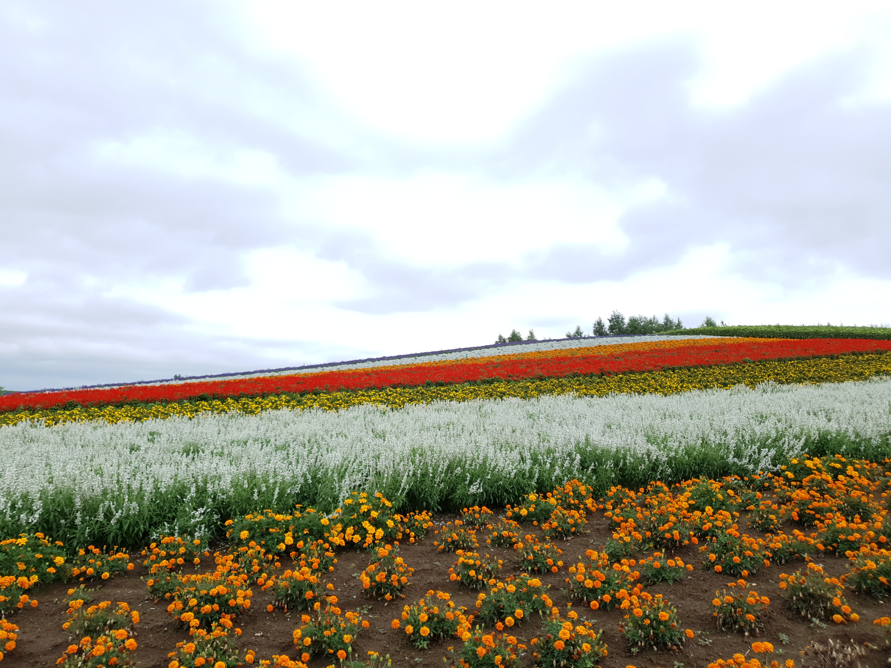
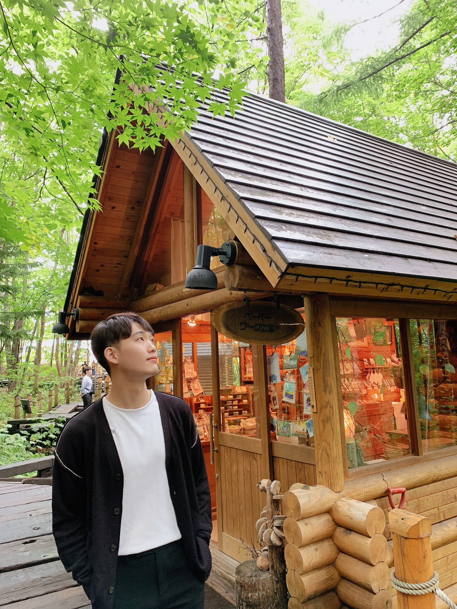
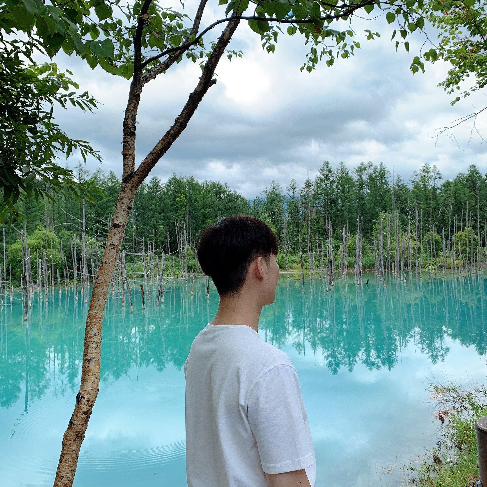
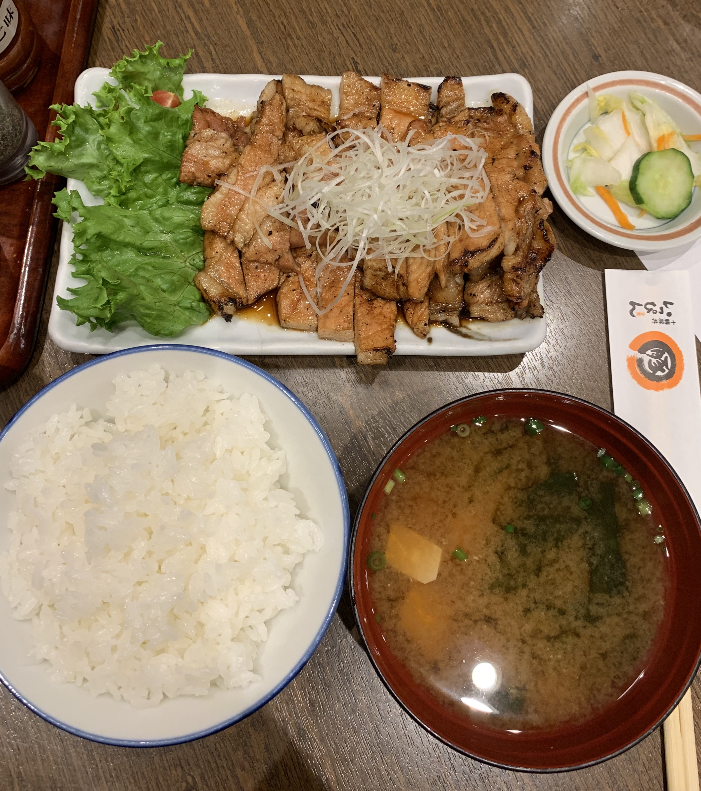
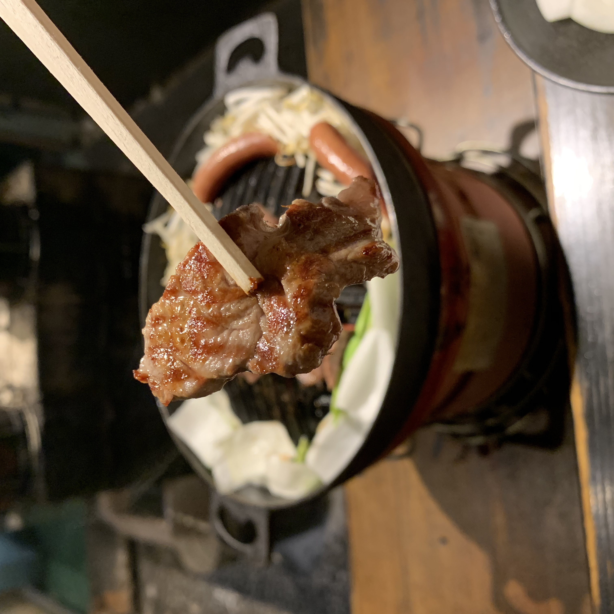
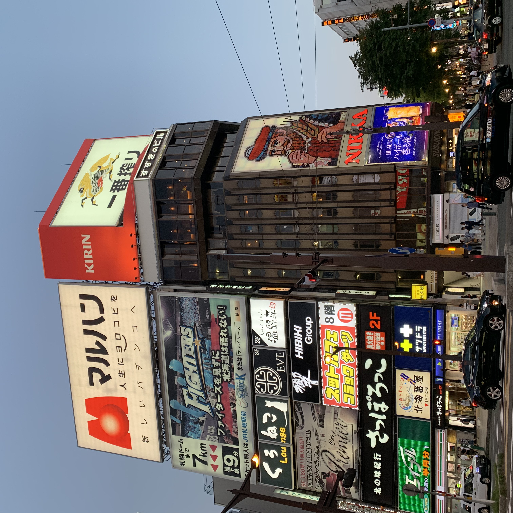
<일본에서의 추억>
이처럼 나는 여행을 하면서 국내여행에서는 각 지방들의 특유의 특산품과 분위기를 느끼고 해외여행에서는 새로운 나라의 특유의 음식과 문화, 낯선곳에서의 해방감, 다양한 사람과의 만남을 통한 생각의 전환등을 경험하게 되었다. 이렇듯 여행은 지루한 일상을 보내던 중의 나의 에너지드링크가 되어주고 나 자신을 더욱 발전시키는 현실의 교재라고 느껴져 여행을 좋아하는 것 중 한가지로 뽑게 되었다.